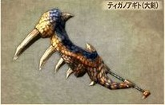
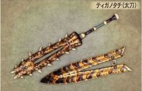

|  |  |  |  |
 |  |  |  |
Hammers
| Pros | Cons |
|---|---|
| Huge damage | Low elemental Status |
| Has Charge attack | Charge replaces block(no block) |
| Can run with it drawn | Slow Attack |
| Highest Knockdown Rate in the game | Bad combos |
Well thats the pros and con for the hammers.
Hammers
Well thats the pros and con for the hammers. |